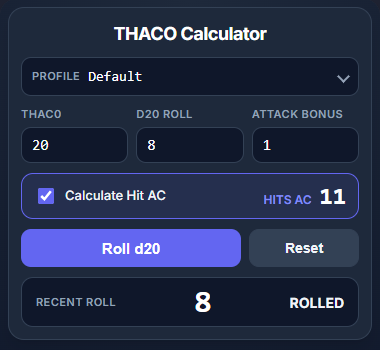

THACO (To Hit Armor Class Zero) is an extension for
Owlbear Rodeo, the virtual tabletop,
that does the maths for THAC0, the hit mechanic used in older editions of Dungeons & Dragons.
Enter your THAC0, the target's Armor Class and your attack bonus, and it tells you the d20 roll you need to hit.
Roll the die right inside the extension to see whether you hit or miss: a natural 20 always hits and a natural 1 always misses,
and the result shows up as a notification in Owlbear.
There is also a "Calculate Hit AC" mode that works the other way round:
give it a d20 roll and it tells you which Armor Class that roll hits.
You can keep named profiles (a longsword, say, or bare hands) and it remembers your numbers between sessions.
In Owlbear Rodeo, open your profile menu and choose Add Custom Extension, then paste this manifest URL:
https://jessescott.github.io/thaco/manifest.json
Open a scene and click the THACO d20 icon in the toolbar.
THACO is a free hobby project, made for the games I run, and the source (MIT licensed) is on
GitHub.
